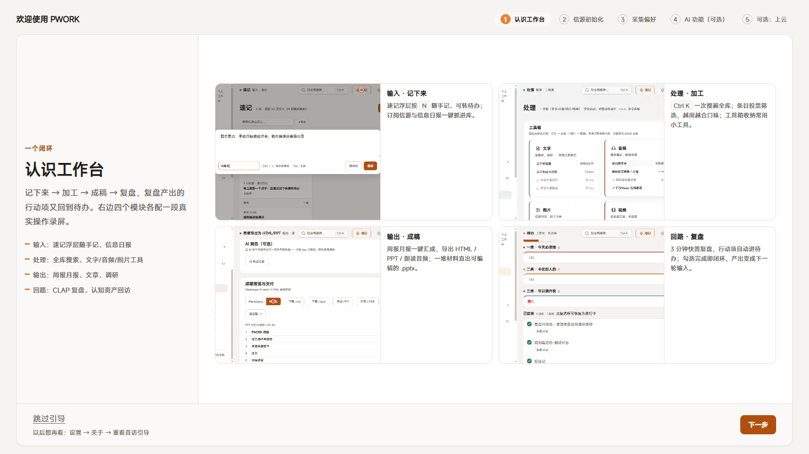

开源免费 · 内测中
一个装在你电脑里的
个人工作台，数据只属于你
记下来、加工、成稿、复盘，四步连成一个循环——全部在你自己的电脑上运行：不上传、不注册、断网也能用。
随手速记、订阅网站更新、每天一份信息日报、一次搜索找出所有内容、一键生成周报和 PPT、复盘后的行动项自动进待办。该有的都有，多余的一样没有。
Windows 10/11 桌面版
macOS（Apple Silicon）内测首包
也可以在浏览器里运行
断网也能用

四个部分，一个循环
每一轮工作，自动变成下一轮的起点
复盘列出的行动项自动进待办，做完打勾就算完成——这一轮做出来的东西，自动变成下一轮的素材。
第一步
记下来
速记窗口随时唤起，想到什么写什么；从 48 个亲测可用的信源里挑想要的，每天自动收成一份信息日报。
第二步
加工
按 Ctrl K 一次搜出所有内容；读过的文章可以投票，投得越多，筛选越合你的口味；还有一批常用小工具。
第三步
成稿
周报月报一键生成，可下载、可导出 PPT、还能转成朗读音频；一堆材料也能直接变成能编辑的 PPT。
第四步
复盘
3 分钟做完一次复盘，行动项自动进待办；做完打勾，下次复盘自动接着这一轮继续。
复盘的行动项自动进待办 → 做完的成果又变成下一轮的素材——这个循环是自动的
三条底线
先说清楚什么不做，再说能做什么
数据不出你的电脑
全部数据都存在你自己的电脑里，随时可以打包搬到新电脑。没有账号，也没有「同步到我们服务器」这种事——因为根本没有我们的服务器。
AI 配不配都行
不配 AI，信息筛选、报告生成全部用你电脑上的规则完成，功能完整。想用 AI，把自己在大模型平台申请的 Key 填进来就行；Key 只写进你电脑上的文件，不经过任何第三方。
云端是可选项
想要全天候自动收信源、多设备同步？在你自己的 Cloudflare 账号里装一套就行（免费档每月 0 元）——装在你自己的账号下，地址和密钥都归你。
现在长什么样
当前内测版本 0.1.10
48
挑好就能用的信源
404
项自动化测试，全部通过
5 步
第一次打开，跟着走完就会用
0 元
软件免费，云端可选免费档
怎么拿到
三种方式，都在 GitHub 仓库里
Windows / macOS 安装包
到 GitHub 项目的发布页下载安装包：Windows 推荐联网版（约 51MB），双击安装；macOS 提供 Apple Silicon 版 dmg（内测首包，首次打开需在系统设置放行）。装完自动进入 5 步上手引导。大陆访问 GitHub 慢的话，Windows 联网版也在 Gitee 镜像（Gitee 规则：下载附件需注册或登录 Gitee 账号）。
去发布页下载 →
浏览器直接用
下载项目到电脑，在 app 目录安装依赖后一条命令就能启动；也可以像应用一样装进浏览器。
看快速开始 →
从源码构建
全部代码公开：界面、桌面安装包、云端同步服务、部署脚本都在仓库里，四百余项自动化测试可以自己跑一遍验证。
浏览源码 →